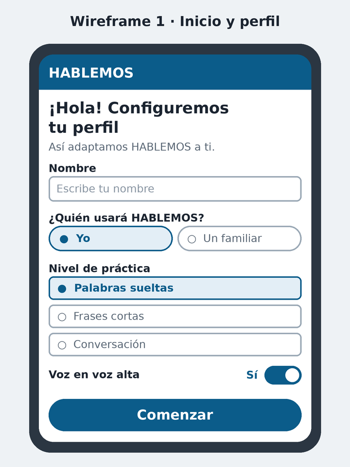
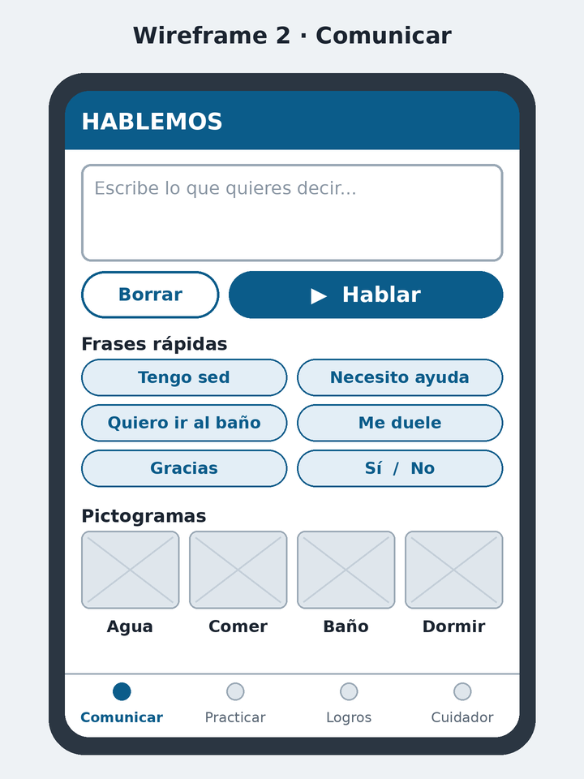
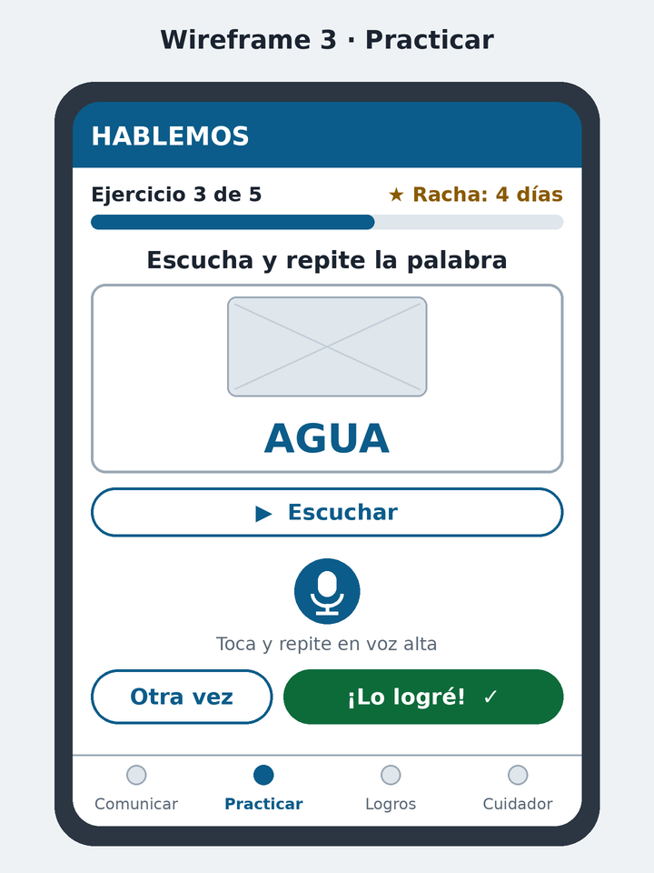
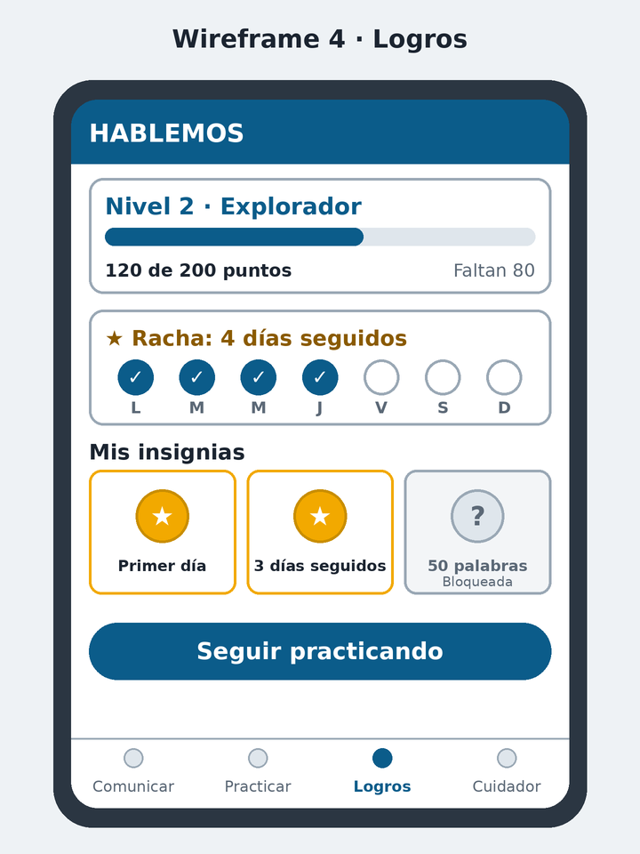
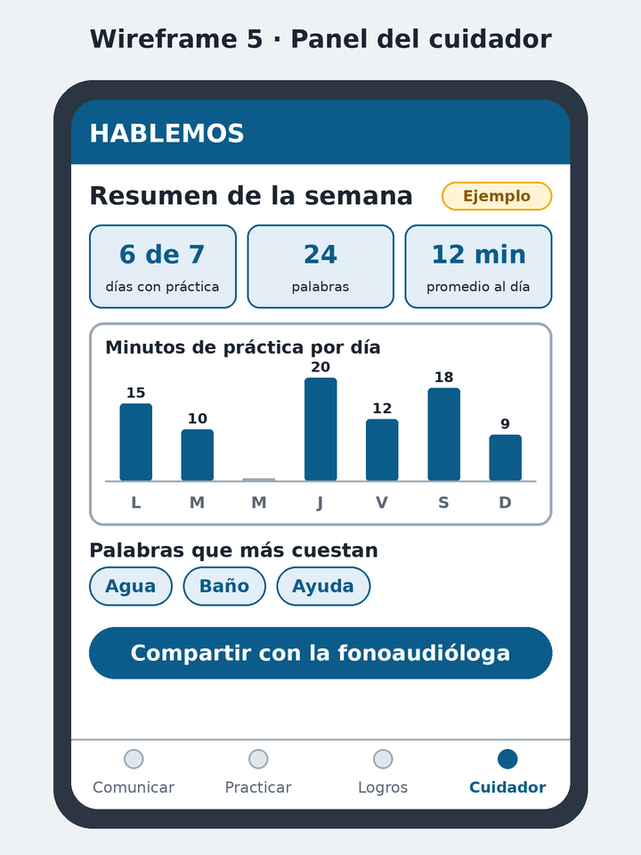

Hay herramientas para comunicar
Existen aplicaciones que dan voz a través de texto y pictogramas. Son muy valiosas para el día a día.
Beta gratuita · Bolivia
No solo da voz. Ayuda a recuperarla: comunica hoy y practica un poco cada día.
Plataforma web de comunicación accesible con texto, voz, pictogramas y frases rápidas, más un entrenamiento diario con ejercicios, puntos, niveles, insignias y rachas.
Quiero unirme a la betaHABLEMOS es un apoyo complementario. No reemplaza la terapia de un profesional.
Después de un ACV, muchas personas conservan sus ideas y sus ganas de hablar, pero les cuesta expresarse. Quienes las cuidan necesitan que puedan comunicar lo básico hoy y, además, practicar en casa entre sesiones de terapia.
Existen aplicaciones que dan voz a través de texto y pictogramas. Son muy valiosas para el día a día.
Investigaciones sobre sistemas de comunicación aumentativa señalan pocas oportunidades de práctica y alto abandono del uso.
Sin una rutina clara ni forma de ver el avance, la práctica depende del tiempo y la paciencia de la familia.
Pantallas claras, botones grandes y pocos pasos para comunicarse.
Escribe o toca pictogramas y frases rápidas y la plataforma lo dice en voz alta.
Ejercicios cortos con puntos, niveles, insignias y rachas para mantener el hábito.
Una rutina lista, sin tener que inventar los ejercicios cada día.
Un resumen semanal que la familia puede compartir con el profesional.
Más autonomía y confianza para la persona, más calma para quien la cuida.
Estos beneficios son nuestra propuesta y los estamos validando con familias en esta beta.
Un recorrido de cinco pantallas. Son bocetos (wireframes) de lo que construiremos con tu ayuda.





Cuéntanos un poco sobre ti. Te escribiremos cuando la beta esté lista. Es gratis y sin compromiso.
Guardamos solo los datos del formulario (nombre, correo, perfil, necesidad, interés y fecha) para contactarte sobre la beta y mejorar HABLEMOS. No los vendemos ni los compartimos. Puedes pedir que los eliminemos escribiéndonos al correo de contacto. No pedimos datos médicos.